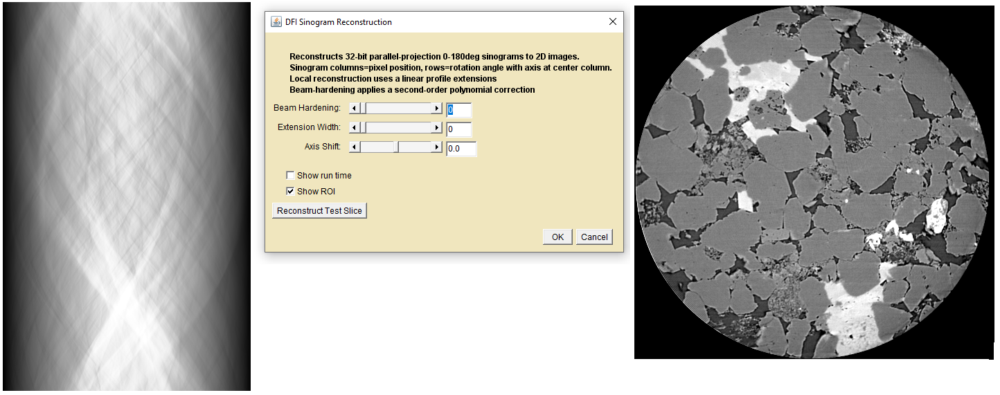

DFI_JTransforms a pure Java
executable for reconstructing 180 degree parallel-beam sinogram(s) using
direct Fourier inversion(DFI). The Java open source JTransforms-3.1-with-dependencies.jar library is used for the FFTs. Download it to the plugins folder before using this plugin.

Sinogram(Left), DFI_JTransforms User interface(Center),
Reconstructed Slice(Right))
Description
Input sinograms are parallel-beam projected opacity (tau) values acquired at equally
spaced angles between 0 and 180 degrees of specimen rotation. Sinograms
of this type can be obtained either by experiment or by digitally
scanning test images with the parallel projector plugins described on
the Scan Simulators page.
Sinogram images have dimensions of length(cm) in the horizontal(x)
dimension and angle(theta) in the vertical(y) dimension. The DFI
algorithm first computes the 1D FT of each of the rows(angles) in the
sinogram. The f(r,theta) polar transforms are interpolated onto a 2D
Cartesian f(x,y) grid to form the 2D FT of the image. The output image
is computed from the inverse 2D FT of the interpolated transform. DFI
is inherently noisier than other reconstruction techniques and produces
significant artifacts if the input sinogram data does not cover the
full 0-180 degree angular range. However, it has a significant speed
advantage that makes it well suited for digital simulations.
Using DFI_JTransforms dialog
Dialog Components
Beam Hardening - Applies a second order beam hardening correction
to the sinogram attenuations τcorr = (1-W)(τobs)
+ (W)(τ2obs). The slider adjusts the weight between
the first and second order terms. Crude but effective on many
relatively homogeneous specimens. Reconstructions may require
rescaling to obtain correct linear attenuation values.
Extension Width - Minimize artifacts arising from a portion of
the specimen rotating outside the field of view by pasting "wings"
onto the sinogram edges that decay smoothly from the edge attenuation
value to zero. Pick a shape that works best for your sinogram.
Axis Shift - A scan's axis of rotation is not always exactly
centered on a pixel. Select a fractional shift and
reconstruct a test slice to see if there is any improvement.The image data is shifted by
interpolation so some loss of resolution may occur.
Show Run Time - Check this box to see the time required for each portion of the reconstruction process.
Show ROI - Draws an ROI around the field of view inside the extension wings.
Reconstruct Test Slice - Opens a "TestSlice" reconstructed
image. Change a setting and click again to observe the result.
OK(reconstruct) - Creates a new image or image stack with the
final reconstruction(s)